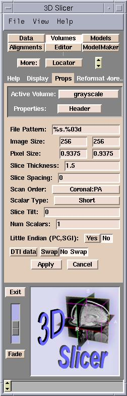

| 
|
- File Pattern: The pattern for naming the files, expressed in C language syntax. For example, a file named
skin.001 has a pattern of %s.%03d, and a file named skin.1 has %s.%d for a pattern.
- Image Size: Number of pixels of the image in the x and
y directions. (For square images, they are the same.)
- Pixel Size: Size of each pixel in the x and y directions.
(For square images, they are the same.)
- Slice Thickness: The z dimension of the voxel.
- Scan Order:
- LR = left to right
- IS = inferior to superior
- PA = posterior to anterior
- Scalar Type: The data format of the pixel. Generally,
it is Short (16 bit integer).
- Slice Tilt: The tilt of the gantry during an MRI.
- Num Scalars: The number of scalar components for each voxel. Gray-level data has 1. Color data has 3.
- Little Endian: In little-endian architectures, the
rightmost bytes are most significant. In big-endian architectures (Slicer
default), the leftmost bytes (those with a lower address)
are most significant.
- DTI data: This parameter, and the values Swap and No Swap,
are placeholders for future use.
|